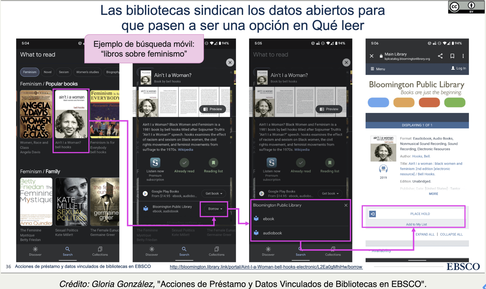

Resumen del Día 2
Objetivos:
- Aprender sobre el formato de Turtle (un lenguaje para trabajar con datos enlazados).
- Conocer la historia y estructura de BIBFRAME.
- Reconocer otros vocabularios universales utilizados en las bibliotecas (Schema.org, FOAF)
- Aportar a la documentación de BIBFRAME mediante la traducción de sus propiedades al español.
Temas Discutidos en Clase:
Modelos Conceptuales y Ontologías
Modelo Conceptual Forma abstracta de pensar sobre el mundo, de manera holística, consistente y coherente.
Ontología Conjunto compartido de términos para codificar ese pensamiento de forma lógica y procesable por máquinas (por ejemplo, en RDF).
Vocabularios Universales
Los vocabularios universales son conjuntos de términos, clases y propiedades que se utilizan para describir datos de manera coherente y estándar, facilitando la interoperabilidad entre diferentes sistemas y dominios. Estos vocabularios están diseñados para ser aplicables en una amplia gama de contextos y pueden ser entendidos y utilizados por máquinas en el marco de la web semántica.
Ejemplos de vocabularios universales utilizados en bibliotecas y datos enlazados:
Schema.org
- Es uno de los vocabularios más utilizados en la web para describir entidades como personas, libros, eventos, productos, entre otros.
Dublin Core
- Es un vocabulario utilizado para describir recursos digitales o físicos, como documentos, imágenes, o datos. Es muy utilizado en bibliotecas, archivos y museos.
FOAF (Friend of a Friend):
- FOAF es un vocabulario para describir personas, sus relaciones y actividades. Es útil para crear perfiles de usuarios y redes sociales.
SKOS (Simple Knowledge Organization System):
- SKOS es un vocabulario para describir esquemas de clasificación y conceptos, como tesauros y taxonomías.
Impacto de Datos Enlazados en las Bibliotecas

Turtle
1. Tripletas
Las tripletas son la unidad básica de RDF y Turtle. Cada tripleta consta de: - Sujeto: El recurso sobre el cual se hace la afirmación. - Predicado: La propiedad o relación del sujeto. - Objeto: El valor o recurso asociado con el sujeto a través del predicado.
Ejemplo:
<https://example.com/libro123> dc:title "Cien años de soledad" .- Sujeto:
<https://example.com/libro123> - Predicado:
dc:title - Objeto:
"Cien años de soledad"
2. Prefijos
Los prefijos permiten acortar las URLs largas mediante el uso de alias. Se declaran al inicio del archivo con la palabra clave @prefix.
Ejemplo:
@prefix dc: <http://purl.org/dc/elements/1.1/> .Esto permite usar dc:title en lugar de escribir la URL completa http://purl.org/dc/elements/1.1/title.
3. Base URI
La declaración @base define una URI base que permite utilizar URIs relativas en lugar de absolutas.
Ejemplo:
@base <https://example.com/> .
<libro123> dc:title "Cien años de soledad" .Es equivalente a:
<https://example.com/libro123> dc:title "Cien años de soledad" .4. Punto y coma (;)
Se usa para hacer múltiples afirmaciones sobre el mismo sujeto sin repetirlo.
Ejemplo:
<https://example.com/libro123>
dc:title "Cien años de soledad" ;
dc:creator "Gabriel García Márquez" .5. Coma (,)
Se usa cuando el mismo predicado tiene múltiples objetos.
Ejemplo:
<https://example.com/libro123>
dc:subject "Realismo mágico", "Literatura latinoamericana" .6. Tipos de datos
Los literales pueden tener un tipo de dato asociado. Esto se indica con el prefijo ^^ seguido del tipo de dato ().
Ejemplo:
<https://example.com/libro123> dc:date "1967"^^xsd:date .7. Nodos en blanco
Se utilizan cuando el recurso no tiene un identificador específico. Se pueden declarar usando corchetes [] o identificadores temporales como _:b1.
Ejemplo:
<https://example.com/libro123> dc:creator [ foaf:name "Gabriel García Márquez" ] .8. Listas
Las listas se representan con paréntesis () y contienen una secuencia de recursos u objetos.
Ejemplo:
<https://example.com/libro123> dc:creator ( <autor1> <autor2> <autor3> ) .9. Comentarios
Los comentarios en Turtle comienzan con # y se ignoran al procesar el archivo.
Ejemplo:
# Este es un comentario.
<https://example.com/libro123> dc:title "Cien años de soledad" .¿Qué es BIBFRAME?
BIBFRAME (Bibliographic Framework) es un modelo de datos basado en RDF (Resource Description Framework) diseñado para reemplazar el formato MARC 21, utilizado tradicionalmente en bibliotecas para la descripción de recursos. Su objetivo principal es mejorar la interoperabilidad y el uso de datos enlazados en los sistemas bibliotecarios modernos.
Componentes del Modelo BIBFRAME:
Clases principales:
- Obra (Work): Representa el contenido abstracto, como una idea o una expresión creativa.
- Manifestación (Instance): Describe la forma física o digital en la que se manifiesta una obra.
- Ítem (Item): Se refiere a una copia física o digital específica de una manifestación.
Estos niveles permiten describir una obra desde el concepto abstracto hasta su representación física.
Relaciones importantes en BIBFRAME:
- BIBFRAME se inspira en RDA y en el IFLA LRM (Library Reference Model), aunque omite la entidad Expresión, asignando características como idioma y tipo de contenido directamente a la Obra.
Metadatos administrativos: Los metadatos en BIBFRAME permiten registrar información administrativa, como el estado de un recurso, el nivel de descripción, y los identificadores relacionados. Esto facilita la gestión de los recursos a lo largo del tiempo y su interoperabilidad.
Implementación y uso de BIBFRAME en español:
Uno de los objetivos de este taller es traducir los términos de BIBFRAME al español para ampliar su accesibilidad. Los términos traducidos se compartirán con la Biblioteca del Congreso y se utilizarán para mejorar la documentación oficial.
Este modelo representa un avance significativo hacia la web semántica, permitiendo que los catálogos de bibliotecas estén mejor conectados y accesibles para diversos sistemas en línea.